FOAM CUTTING
3-AXIS DEVICE
Precision Engineering. Smart Automation. Creative Manufacturing.
An advanced Makerspace engineering initiative developing a low-cost, CNC-controlled 3-axis hot wire foam cutting machine capable of slicing foam, thermocol, and EPS materials with automated precision, reduced manual labor, and minimal material wastage.
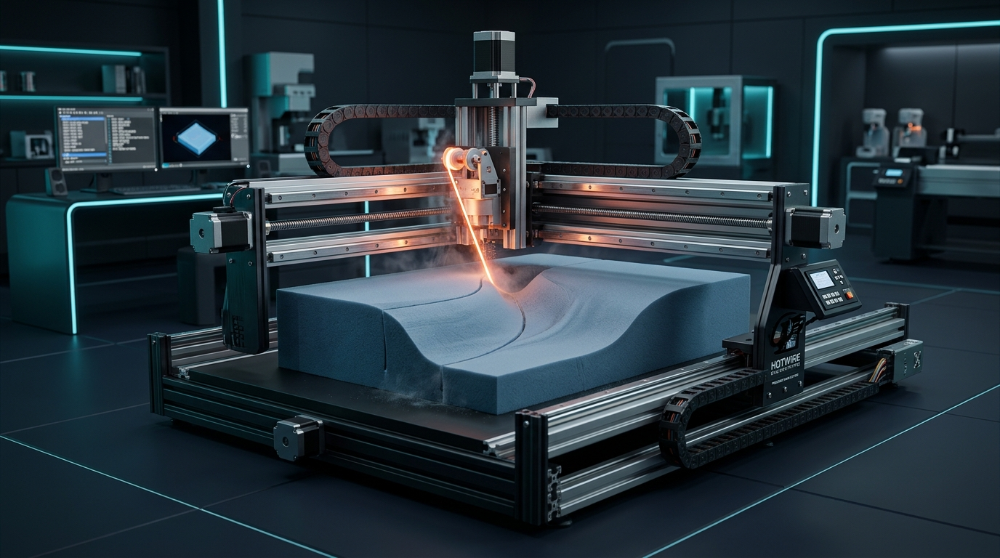
ABOUT THE PROJECT
Bridging mechanical kinematics, embedded control, and thermal physics to revolutionize low-cost rapid prototyping for engineering and architectural modeling.
What is a 3-Axis Foam Cutting Device?
It is an automated Cartesian CNC system engineered specifically for slicing low-density polymers, including Expanded Polystyrene (EPS), Extruded Polystyrene (XPS), and thermocol. It guides an electrically heated wire through a programmable three-dimensional trajectory (X, Y, and Z axes) to carve complex geometries without physical shear force.
Why Was It Developed?
Conventional industrial CNC routers are expensive, bulky, and generate excessive airborne dust and bead tearing when machining foam. Conversely, manual hot-wire cutting is error-prone and non-repeatable. This project fills the gap by providing an affordable, clean, accessible desktop solution for college labs and prototyping workshops.
How Does It Work?
The Arduino Nano microcontroller coordinates 28BYJ-48 stepper motors through ULN2003 drivers. Lead screws translate rotational motion into linear displacement along the X, Y, and Z axes. Simultaneously, a regulated DC current heats a high-resistance wire to the precise vaporization temperature of the workpiece, vaporizing a microscopic kerf smoothly without mechanical contact.
What Makes It Useful?
It delivers near-zero material wastage, smooth sealed edges, identical duplicate batches, and extreme cost savings. Engineering students, architects, and product designers can iterate physical mockups within minutes instead of hours of painstaking manual carving.
Department of Mechanical Engineering
Sanjivani University Makerspace Innovation Ecosystem
PROBLEM STATEMENT
Manual foam fabrication suffers from inherent operational flaws that limit its viability in modern engineering education and precision prototyping.
High Manual Effort
Cutting foam by hand using utility knives or freehand hot-wire wands requires prolonged physical exertion, steady hands, and continuous concentration, leading to physical fatigue and operator strain.
Time-Consuming Operation
Fabricating complex contours or multi-layered architectural forms manually takes hours of slow tracing and repetitive trimming, slowing down rapid engineering design cycles.
Difficulty Achieving Accurate Shapes
Achieving true perpendicular bevels, smooth curves, aerofoil profiles, and strict dimensional tolerances is virtually impossible with freehand tools due to hand tremor and wire deflection.
Material Wastage & Scorching
Inconsistent manual feed rates cause localized overheating, resulting in melted voids, scorched edges, or jagged tears that ruin expensive foam stock and increase scrap rates.
Limited Repeatability
Manual cutting cannot reproduce identical parts. When batch manufacturing aerodynamic components or uniform packaging trays, human variability causes unacceptable component differences.
Automated CNC Precision
By automating three-axis motion via digital stepper motors and maintaining continuous wire thermal regulation, our device eliminates human error and guarantees repeatable accuracy.
PROJECT OBJECTIVES
The project was designed with six fundamental milestones to make digital fabrication accessible, reliable, and economical.
Develop an Affordable CNC Foam Cutter
Build a fully functional three-axis machine utilizing accessible, economical electronic and mechanical components without sacrificing rigid performance.
Automate Cutting Movements
Program synchronized Cartesian motions along the X, Y, and Z axes through microcontroller firmware, enabling seamless vector contour execution.
Improve Cutting Accuracy
Leverage lead screws and microstepping motor drivers to eliminate backlash and human hand tremors, producing clean, sharp geometric edges.
Reduce Manual Effort
Transition operators from laborious manual carving to digital machine supervision, substantially cutting fabrication fatigue.
Minimize Material Wastage
Calibrate cutting speeds and wire temperature to achieve optimal thermal kerf, reducing scrap parts and raw material expenses.
Create Repeatable Shapes
Guarantee that every manufactured piece matches CAD specifications identically, unlocking small-batch component production.
WORKING PRINCIPLE
The device translates digital coordinates into precise 3-dimensional Cartesian movements while feeding thermal energy to the wire for frictionless material ablation.
X-Axis Movement
Provides left and right horizontal motion across the gantry crossbeam. It controls the lateral positioning of the cutting mechanism across the width of the foam workpiece.
Y-Axis Movement
Controls forward and backward longitudinal displacement across the workbed. It drives the workpiece or gantry depth-wise, dictating the length profile of the cut.
Z-Axis Movement
Directs up and down vertical movement along dual synchronized lead screws. It establishes height positioning, allowing intricate 3D contoured profiles and beveled steps.
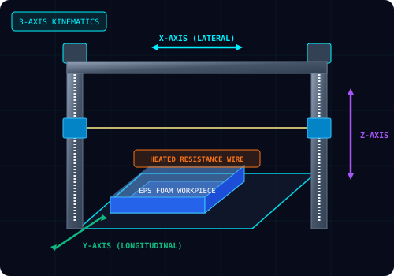
Controller Operation
The Arduino Nano executes coordinated step pulses calculated through interpolation math. By sequentially firing the 4 coils of each 28BYJ-48 stepper motor through ULN2003 Darlington arrays, it achieves synchronized linear motion across all three dimensions simultaneously.
Cutting Mechanism & Thermal Kerf
Rather than using a spinning router bit that tears cellular foam beads, a calibrated Ni-Chrome resistance wire is heated to roughly 200°C–220°C via regulated DC power. As the wire passes through the material, radiant and conductive heat cleanly vaporizes a razor-thin kerf without mechanical resistance or saw dust.
Interactive 3-Axis CNC Machine Simulator
Interact with the 3D model: drag to rotate view, scroll to zoom, adjust axis sliders or trigger cutting routines.
COMPONENTS USED
Carefully selected, cost-effective hardware elements engineered to achieve high dimensional accuracy without expensive industrial overhead.
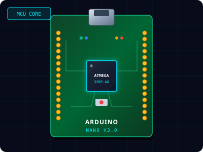
Arduino Nano
Compact 8-bit microcontroller operating at 16 MHz. It serves as the brain of the device, parsing coordinate commands, generating timing pulses, and regulating wire heat via PWM output.
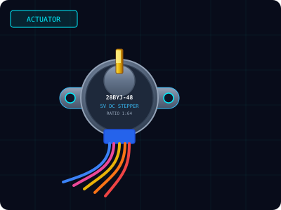
28BYJ-48 Stepper Motors
Geared unipolar stepper motors featuring an internal 64:1 reduction gearbox. Provides high holding torque and 4096 steps per revolution in half-step mode for fine linear positioning.
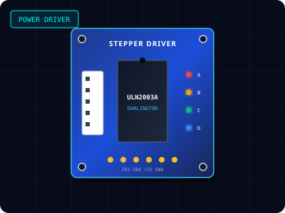
Compatible Motor Drivers
High-voltage, high-current Darlington transistor arrays. Amplifies weak 5V logic pulses from the Arduino Nano to supply sufficient coil current for smooth motor stepping with visual status LEDs.
CNC Mechanical Frame
Rigid chassis built with extruded aluminum profiles, linear guide rods, and bearing blocks. Ensures mechanical rigidity, minimal vibrational deflection, and smooth travel across all 3 axes.
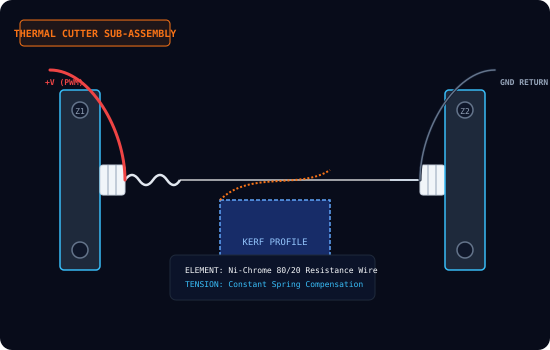
Cutting Wire & Tensioner
High-resistance Ni-Chrome alloy wire suspended between spring-loaded ceramic carriage insulators. Thermal expansion is compensated automatically by the spring to keep the wire taught during cutting.
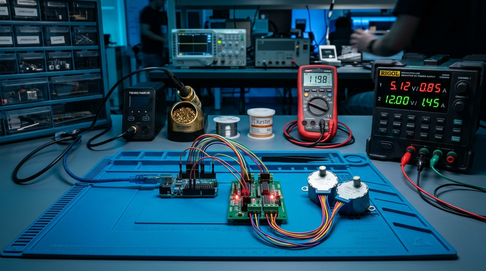
Power Supply Unit (PSU)
Provides clean, isolated voltage lines: a regulated 5V DC line for Arduino logic and stepper drivers, alongside a dedicated high-current supply for the heated resistance wire.
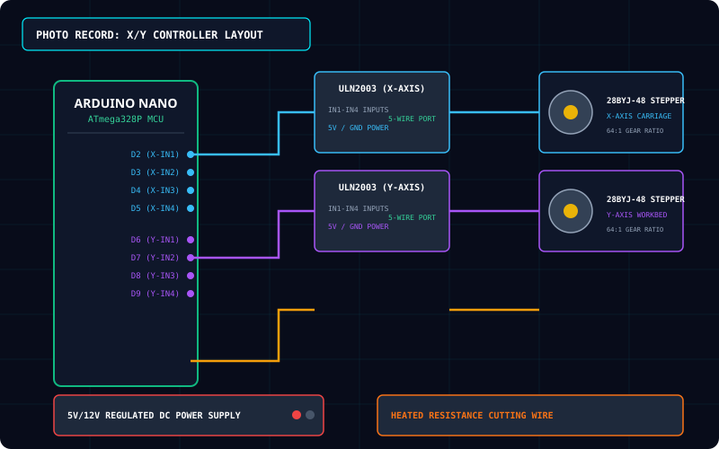
Mechanical & Electrical Connections
Precision threaded lead screws, brass anti-backlash nuts, flexible aluminum shaft couplers, and organized shielded ribbon cables linking the microcontroller to individual driver stages.
3D CAD DESIGN SHOWCASE
Engineered in SolidWorks with precise component clearances, stress-bearing gantry calculations, and optimized wire tensioning geometry.

Exploded Assembly Model
Detailed projection diagram visualizing the layered assembly of base bed, gantry towers, and carriages.
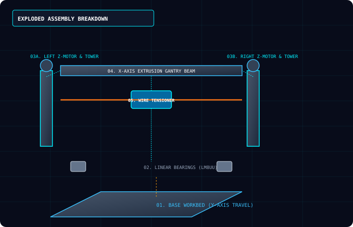
Gantry & Motor Mounts
Custom bracket geometry for 28BYJ-48 stepper motors with integrated slots for lead screw alignment.
Spring-Loaded Wire Bow
Tensioner assembly maintaining continuous tautness as the Ni-Chrome wire thermally elongates during operation.
PROJECT DEVELOPMENT
A transparent visual timeline tracking our engineering journey from conceptual design to ongoing mechanical and electrical integration.
Initial Concept
COMPLETEDConducted problem definition workshops in the Makerspace lab. Formulated the core concept of an affordable 3-axis Cartesian machine dedicated to thermal foam processing.
Research and Planning
COMPLETEDReviewed academic literature on hot-wire thermal kerf dynamics, stepper motor torque curves, lead screw pitch formulas, and embedded kinematics interpolation algorithms.
CAD Design
COMPLETEDCreated complete SolidWorks 3D CAD assembly models including frame extrusions, lead screw mounts, motor brackets, and spring-loaded cutting wire tensioner.
Component Selection
COMPLETEDProcured and verified key components: Arduino Nano microcontroller, 28BYJ-48 stepper motors, ULN2003 drivers, structural extrusions, lead screws, and Ni-Chrome resistance wire.
Mechanical Assembly
IN PROGRESSAssembling the structural aluminum gantry frame, mounting linear guide rods, installing lead screws, and aligning the 3-axis motion carriages in the university lab.
Electronics Integration
IN PROGRESSWiring Arduino Nano microcontroller to ULN2003 driver arrays, routing stepper motor leads, testing power delivery buses, and calibrating wire heating control circuitry.
Testing and Improvements
PLANNEDScheduled milestone for initial motion validation, cut surface kerf measurement, feed rate optimization, and mechanical rigidity tuning under cutting load.
Final Prototype
PLANNEDProject culmination featuring full operational demonstration, comprehensive report documentation, and showcase display at Sanjivani University Makerspace exhibitions.
PROJECT GALLERY
Explore CAD models, component schematics, electronics testing setups, and cutting mechanism perspectives. Click any image to view in high-resolution lightbox.
Full Machine Architecture
SolidWorks Isometric Model
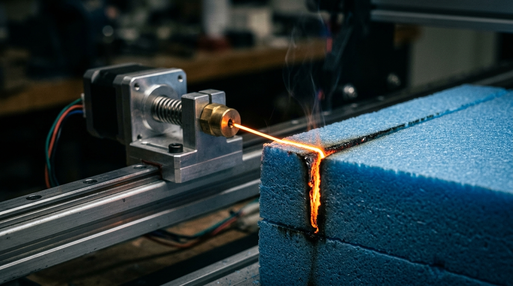
Thermal Hot Wire Ablation
Workstation & Controller Bench
System Wiring Schematic
Exploded Assembly View
APPLICATIONS
The 3-axis CNC foam cutter provides transformative capabilities across diverse educational, industrial, and artistic domains.

Architectural Models
Rapid manufacturing of stepped site topographies, structural building mockups, and exterior facade reliefs from high-density blue or pink XPS foam sheets.
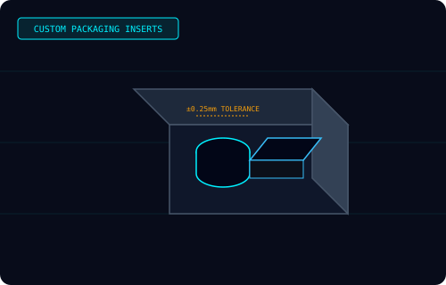
Packaging Prototypes
Custom shock-absorbing enclosures, camera casing inlays, and precision electronic instrument cushion trays tailored exactly to physical device dimensions.
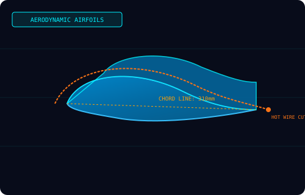
Model Making & Wings
Precision cutting of NACA airfoil wing profiles, aircraft fuselages, and aerodynamic fairing cores for radio-controlled aviation and wind-tunnel testing.
Educational Projects
Hands-on instructional platform in university Makerspaces to teach students multi-axis CNC kinematics, stepper microstepping, and microcontroller firmware.
Craft & Signage Design
Dimensional artistic typography, exhibition display logos, movie prop sculpting cores, and custom decorative molds with smooth sealed boundaries.
Foam Prototyping
Validating volumetric concepts, ergonomic handles, automotive clay-core mockups, and casting sacrificial patterns before investing in metal machining.
FUTURE SCOPE
Strategic engineering enhancements planned for subsequent development iterations to elevate machine autonomy, speed, and capabilities.
Improved Automation
Transitioning to dedicated GRBL/Marlin 32-bit CNC controllers with standalone SD card streaming and touch-screen pendant control for computer-free operation.
Advanced CNC Control (4-Axis)
Implementing independent dual vertical gantry control (X1-Y1 / X2-Y2) to cut tapered aerofoils, sweeps, and non-parallel 3D transition geometries.
Better Dimensional Accuracy
Upgrading to NEMA 17 high-torque stepper motors with optical rotary encoder feedback and anti-backlash lead screw nuts for sub-millimeter precision.
Improved Mechanical Structure
Fabricating a heavy-duty extruded aluminum chassis with dual linear rail MGN12 carriages and rigid corner gussets for vibration dampening.
Additional Control & Safety Features
Closed-loop digital PID temperature feedback using an integrated thermistor, hardware emergency stop (E-Stop) interlock, smoke extraction hood, and wireless web telemetry monitoring.
MEET OUR TEAM
"Together, We Turn Engineering Ideas Into Innovative Solutions."
Krushna Jamdar
Sanjivani University
Samiksha Kale
Sanjivani University
Sanket Gujar
Sanjivani University
FACULTY GUIDANCE & MENTORS
"Guided by Knowledge. Inspired by Innovation."
Dr. Kiran Wakchaure
Dr. Prathibha Sinha
Dr. Vasudeo Singh Singar
Dr. K. C. Bhosale
PROJECT DOCUMENTATION
Verified technical resources, circuit schematics, SolidWorks CAD models, and ready-to-flash Arduino firmware for university replication and review.
Technical Data Sheet
Structured machine specifications, kinematics parameters, driver pinouts, and compatible materials data.
Arduino Firmware
Fully functional C++ firmware with 8-step half-stepping sequence and PWM wire temperature controller.
Wiring Schematic
High-resolution vector schematic depicting Arduino Nano to ULN2003 drivers and stepper motor interconnects.

SolidWorks Assembly
High-detail isometric CAD view render displaying 2020 extrusion framing, lead screws, and wire tensioner bow.

// 3-Axis Foam Cutter - Arduino Nano Firmware
const int X_IN1 = 2; const int X_IN2 = 3; const int X_IN3 = 4; const int X_IN4 = 5;
const int Y_IN1 = 6; const int Y_IN2 = 7; const int Y_IN3 = 8; const int Y_IN4 = 9;
const int Z_IN1 = 10; const int Z_IN2 = 11; const int Z_IN3 = 12; const int Z_IN4 = 13;
const int WIRE_PWM_PIN = A0;
// 8-Step Half-Stepping Sequence for 28BYJ-48
const int stepLookup[8][4] = {
{1, 0, 0, 0}, {1, 1, 0, 0}, {0, 1, 0, 0}, {0, 1, 1, 0},
{0, 0, 1, 0}, {0, 0, 1, 1}, {0, 0, 0, 1}, {1, 0, 0, 1}
};
void setup() {
Serial.begin(115200);
for (int pin = 2; pin <= 13; pin++) pinMode(pin, OUTPUT);
pinMode(WIRE_PWM_PIN, OUTPUT);
analogWrite(WIRE_PWM_PIN, 0); // Safe default: heater off
Serial.println(F("SANJIVANI UNIVERSITY - FOAM CUTTER READY"));
}
void loop() {
// Command Parser & Kinematics Routine
}